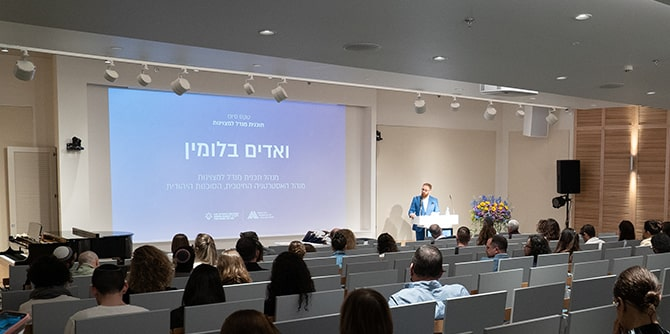
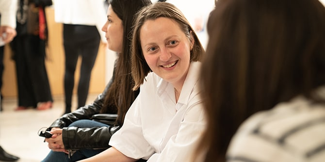
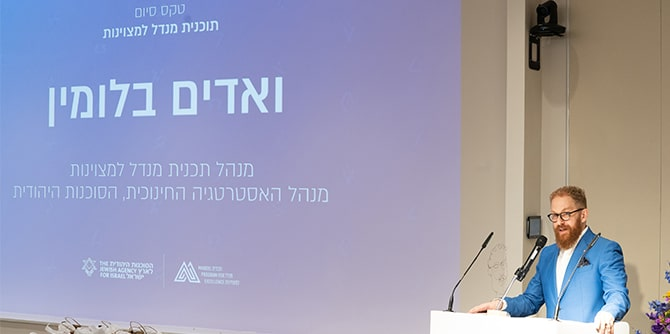
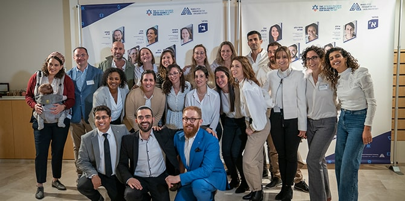

טקס הסיום (צילום: סימנים הפקות)
טקס הסיום החגיגי של מחזורים ב' וג' של התוכנית נערך בבית קרן מנדל בירושלים. בטקס השתתפו משה ויגדור, מנכ"ל קרן מנדל-ישראל, אמירה אהרונוביץ', מנכ"לית הסוכנות היהודית ובוגרת בית ספר מנדל למנהיגות חינוכית, משה שיף, סמנכ"ל משאבי אנוש ומינהל של הסוכנות היהודית, ואדים בלומין, מנהל התוכנית, בוגרי התוכנית ובני משפחותיהם.
התוכנית נועדה להכשיר שליחים מן הסוכנות היהודית בקהילות יהודיות בחו"ל ששבו לארץ, לקראת מילוי תפקידי ניהול בסוכנות. בשל מגבלות הקורונה, שעיכבו את קיום טקס הסיום בשנה שעברה, כלל הטקס את שבעת בוגרי מחזור ב' ואת שמונת בוגרי מחזור ג' – רבים מהם ממלאים כיום תפקידים בכירים בארגון.

בטקס הסיום (צילום: סימנים הפקות)
מנהל התוכנית, ואדים בלומין, תיאר בדברי הברכה שלו למסיימי התוכנית את העקרונות שעליהם הושתתה: מערכות יחסים והמפגש עם האחר; זהות – היכולת לספר את הסיפור שלנו כקולקטיב, כקבוצות וכיחידים; ואחריות – היכולת לנקוט עמדה וליטול אחריות על עתידנו.
"בדיוק את שלושת הדברים האלה ניסינו לעשות במסגרת תוכנית מנדל למצוינות בסוכנות היהודית. מצד אחד, לאפשר פיתוח אישי ומקצועי באמצעות מערך המנטורינג שלנו, אבל בצדו לגבש כל מחזור כקבוצה קטנה ומגוונת ככל שניתן, ואף לטפח את שלושת המחזורים כרשת עמיתים וכקהילה פעילה", אמר בלומין.

ואדים בלומין (צילום: סימנים הפקות)
"ברכות לואדים בלומין, מנהל התוכנית ולצוות על עבודה מזהירה, ותודה לאלן הופמן על ששכנע שהתוכנית הזאת חיונית" אמר מנכ"ל קרן מנדל-ישראל משה ויגדור. "אני מאמין גדול בסוכנות ובתפקיד ההיסטורי המתמשך שלה, ומברך אותה על קדר מנהלים מוכשרים שאתם מייצגים. אני מאמין גם שמצוינות אינה מילה סתם, אלא מהות הדורשת המשגה מתחדשת כל הזמן. ההצטיינות והשאיפה לעשות הכי טוב שאפשר מאפשרות לנו להעניק משמעות לדבריו של מורט מנדל: כמעט בכל סוג של מאמץ אנושי אנחנו רחוקים עדיין מפסגת ההר, העניין הוא רק להבין שאין גבול למה שיוזמה יכולה להשיג'. היו ברוכים והצליחו בכל מעשה שתעשו ובכל תפקיד".
נשיא קרן ג'ק, ג'וזף ומורטון מנדל, פרופ' יהודה ריינהרץ, השתתף בטקס באמצעות הווידאו ובירך את הבוגרים: "שמחתי לשמוע שחלק ניכר מבוגרי התוכנית נשארו, כפי שקיווינו, בסוכנות, וכבר ממלאים תפקידים חשובים ואפילו בכירים. אתם בעצם העתודה של הסוכנות, ונועד לכם תפקיד חשוב בתקופה לא קלה – גם בארץ וגם ביהדות התפוצות... אני מאחל לכם הצלחה רבה", אמר.
 בוגרי התוכנית (צילום: סימנים הפקות)
{kind=link}
{kind=link}
{kind=link}
{kind=link}